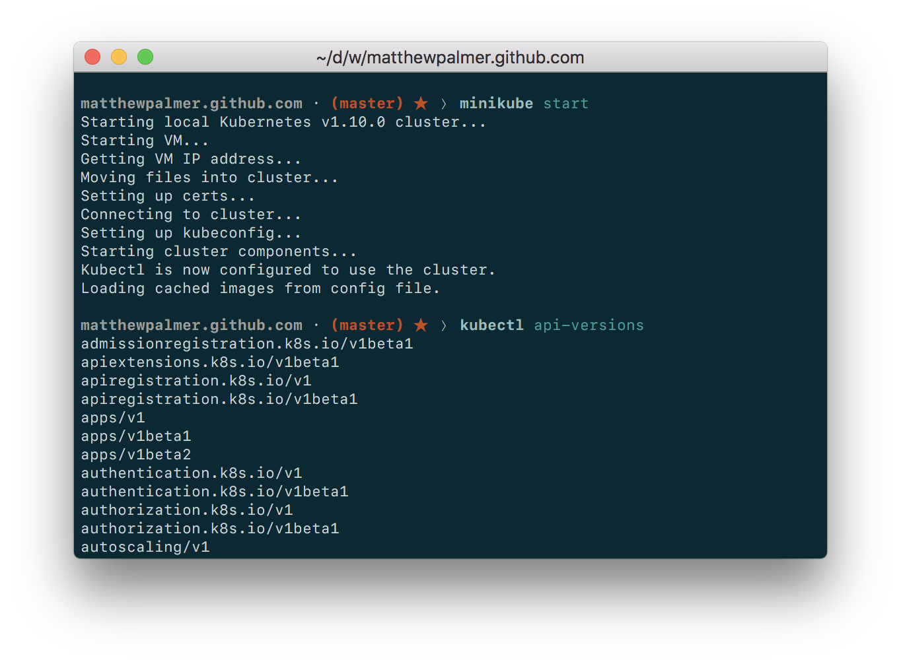

This is a step-by-step guide to installing and running Kubernetes on your Mac so that you can develop applications locally.
You will be guided through running and accessing a Kubernetes cluster on your local machine using the following tools:
Homebrew
Docker for Mac
Minikube
virtualbox
kubectl
Installation Guide
The only pre-requisite for this guide is that you have Homebrew installed. Homebrew is a package manager for the Mac. You’ll also need Homebrew Cask, which you can install after Homebrew by running brew tap caskroom/cask in your Terminal.
Install Docker for Mac. Docker is used to create, manage, and run our containers. It lets us construct containers that will run in Kubernetes Pods.
Install VirtualBox for Mac using Homebrew. Run brew cask install virtualbox in your Terminal. VirtualBox lets you run virtual machines on your Mac (like running Windows inside macOS, except for a Kubernetes cluster.)
Skip to step three if everything has worked to this point.
Install kubectl for Mac. This is the command-line interface that lets you interact with Kuberentes. Run brew install kubectl in your Terminal.
Minikube will run a Kubernetes cluster with a single node.
Everything should work! Start your Minikube cluster with minikube start. Then run kubectl api-versions. If you see a list of versions, everything’s working! minikube start might take a few minutes.

Come Together
You’ve installed all these tools and everything looks like it’s working. A quick explanation of how the components relate is needed.
VirtualBox is a generic tool for running virtual machines. You can use it to run Ubuntu, Windows, etc. inside your macOS operating system host.
Minikube is a Kubernetes-specific package that runs a Kubernetes cluster on your machine. That cluster has a single node and has some unique features that make it more suitable for local development. Minikube tells VirtualBox to run. Minikube can use other virtualization tools—not just VirtualBox—however these require extra configuration.
kubectl is the command line application that lets you interact with your Minikube Kubernetes cluster. It sends request to the Kubernetes API server running on the cluser to manage your Kubernetes environment. kubectl is like any other application that runs on your Mac—it just makes HTTP requests to the Kubernetes API on the cluster.